The design of turbine blading affects the reliability and efficiency of the turbine. The longer the blade the greater the bending force at the root, or fixing point, of the blade. There is also a centrifugal force, due to the speed at which the blade is rotating, trying to throw the blade outwards. These two forces—the bending force and the throwing-out force—are at maximum in the largest blade wheel at the LP exhaust end of the turbine. Thus, the stresses which these forces impose limit the size of the blades and the diameter of the last wheel. This limitation is one of the reasons why turbines are designed with double flow in the LP cylinder.
In the double flow design, steam enters at the centre of the rotor with half of the steam flowing to the front of the machine and half flowing toward the rear of the machine. This design can handle double the flow of steam compared to a single flow with the same diameter of blading.
There is a pressure drop across each row of blades in a reaction turbine, and a considerable force is set up, which acts on the rotor in the direction of the steam flow. In order to counteract this force and reduce the load on the thrust bearings, dummy pistons are designed as part of the rotor at the steam inlet end. The dummy piston diameter is calculated so that the force of the steam pressure acting upon it in the opposite direction to the steam flow balances out the force on the rotor blades in the direction of the steam flow. The size of the dummy piston is designed to keep a small but definite thrust towards the exhaust end of the turbine. A balance pipe is connected from the casing, on the outer side of the balance piston, to a tap-off point down the cylinder. The differential pressure remains constant at varying steam flow conditions.
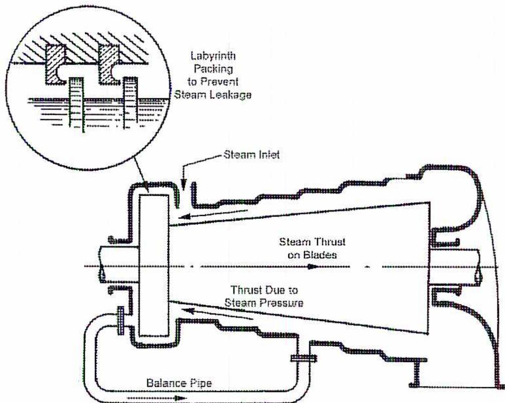
Dummy Piston and Balance Pipe
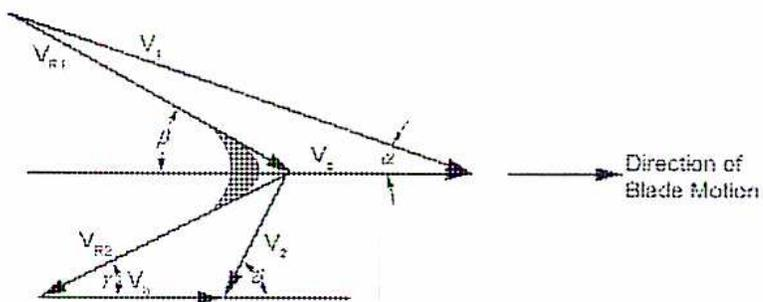
Turbine Blade Velocity-Vector Diagram
The letters used in the turbine blading diagrams are from the Greek alphabet:
| \( \alpha \) | Alpha |
| \( \beta \) | Beta |
| \( \delta \) | Delta |
| \( \gamma \) | Gamma |
Explanation of Terms in the Above Diagram
\( V_1 \) represents (in magnitude and direction) the steam leaving the nozzle. This becomes the steam inlet to the moving blade.
The above angles and sides form the inlet blade velocity diagram.
Another triangle is formed by the conditions obtained at the moving blade outlet as follows:
Similarly, steam may be drawn off at one or more points at different pressures for process steam. This requires automatic control of the steam quantity supplied to the lower pressure section of the turbine. This arrangement is termed automatic extraction in contrast to bleeder turbines, where the pressure at the bleed points varies with the steam flow through the turbine. Bleed points range in number from one to eight, but extraction generally requires only one or two pressure levels.
Double casings are used for very high steam pressure applications. The highest pressure is applied to the inner casing, which is open at the exhaust end. The turbine inner casing exhausts to the outer casing. The pressure is divided between the casings, and more importantly, so is the temperature. The thermal stresses on casings and flanges are greatly reduced.
Under operating conditions, the temperature of the wheels rises faster than that of the shaft. This might tend to make the wheel hubs become loose. To avoid any such danger, care is taken during construction of the rotor to ensure the wheels are shrunk on tight and correctly stressed. Fig. 14 illustrates a disc type of rotor which is the type used in the LP cylinder of most designs of large turbines.
The following types of shaft seals are used on steam turbines:
The combined velocity-vector diagram representing the conditions must first be drawn.
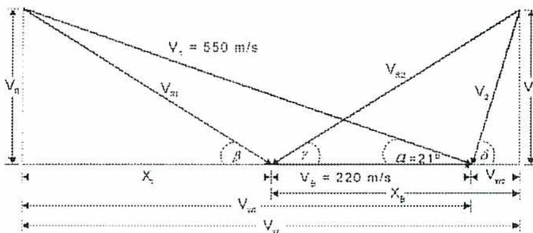
The diagram illustrates the velocity vectors for an impulse turbine blade. A horizontal line represents the blade's path, with the blade velocity \( V_b = 220 \text{ m/s} \) indicated by a double-headed arrow. The absolute inlet velocity \( V_1 = 550 \text{ m/s} \) is shown as a vector entering from the top left at an angle \( \alpha = 21^\circ \) . The relative inlet velocity \( V_{r1} \) is the vector difference between \( V_1 \) and \( V_b \) . The absolute outlet velocity \( V_2 \) is shown as a vector exiting to the top right. The relative outlet velocity \( V_{r2} \) is the vector difference between \( V_2 \) and \( V_b \) . The diagram also shows the axial components \( V_{n1} \) and \( V_{n2} \) , the tangential components \( V_{w1} \) and \( V_{w2} \) , and the blade inlet and outlet angles \( \beta \) and \( \delta \) .
Impulse Blading Vector Diagram
Given data:
$$ V_1 = 550 \text{ m/s} $$
$$ V_b = 220 \text{ m/s} $$
$$ \alpha = 21^\circ $$
$$ V_{R2} = V_{R1} $$
$$ \gamma = \beta $$
Values \( X_1 \) and \( X_B \) are added to the diagram for ease of reference and to simplify the trigonometric calculations.
(a) Blade inlet angle so that the steam will enter without shock ( \( V_2 \) ).
$$ V_{w1} = V_1 \times \cos \alpha $$
$$ V_{w1} = 550 \text{ m/s} \times \cos 21^\circ $$
$$ V_{w1} = 550 \text{ m/s} \times 0.9336 $$
$$ V_{w1} = 513.47 \text{ m/s} $$
$$ V_{f1} = V_1 \times \sin \alpha $$
$$ V_{f1} = 550 \text{ m/s} \times \sin 21^\circ $$
$$ V_{f1} = 550 \text{ m/s} \times 0.3584 $$
$$ V_{f1} = 197.10 \text{ m/s} $$
$$ X_1 = V_{w1} - V_B $$
$$ X_1 = 513.47 \text{ m/s} - 220 \text{ m/s} $$
$$ X_1 = 293.47 \text{ m/s} $$
$$ \beta = \tan^{-1} \frac{V_{f1}}{X_1} $$
$$ \beta = \tan^{-1} \left( \frac{197.10 \text{ m/s}}{293.47 \text{ m/s}} \right) $$
$$ \beta = \tan^{-1} (0.6716) $$
$$ \beta = 33^\circ 53' \text{ (Ans.)} $$
(b) Magnitude and direction of the absolute velocity of the steam leaving the blades.
$$ \text{Blade outlet angle } \gamma = \text{Blade inlet angle } \beta $$
$$ \gamma = \beta $$
$$ \text{Blade outlet angle } \gamma = 33^\circ 53' \text{ (Ans.)} $$
Since \( V_{R2} = V_{R1} \)
$$ X_B = X_1 $$
Then But \( X_1 = 293.47 \text{ m/s} \)
$$ X_B = 293.47 \text{ m/s} $$
$$ V_{W0} = X_E - V_B $$
$$ V_{W0} = 293.47 \text{ m/s} - 220 \text{ m/s} $$
$$ V_{W0} = 73.47 \text{ m/s} $$
$$ V_{FB} = V_{F1} $$
But \( V_{F1} = 197.10 \text{ m/s} \)
$$ V_{FB} = 197.10 \text{ m/s} $$
From Pythagoras's theorem:
$$ V_2 = \sqrt{V_{FB}^2 + V_{W0}^2} $$
$$ V_2 = \sqrt{(197.10 \text{ m/s})^2 + (73.47 \text{ m/s})^2} $$
$$ V_2 = \sqrt{38848.41 + 5397.84} $$
$$ V_2 = \sqrt{44246.25} $$
Magnitude of steam velocity \( V_2 = \mathbf{210.35 \text{ m/s}} \) (Ans.)
![Vector diagram for a reaction turbine. The diagram shows two horizontal lines representing the absolute velocity (V1) and blade velocity (Vb) paths. The absolute velocity V1 = 122 m/s enters at an angle of 23 degrees from the horizontal at point C and exits at point E. The blade velocity Vb = 88 m/s is shown as a horizontal vector from A to B. The relative velocity Vrf is shown as a vector from A to D. The total change in velocity of whirl is indicated by a horizontal double-headed arrow between C and E. The angle alpha is 23 degrees at point B.](3121afa7ca030b22ee0345864ca6f38b_img.jpg)
Vector Diagram
a) Given:
$$ V_1 = 122 \text{ m/s} $$
$$ V_b = 88 \text{ m/s} $$
$$ \angle \alpha = 23^\circ $$
Reaction (or 50% reaction) blading has identical moving and fixed blades. The angles and vectors around point A are duplicated around point B. The angle required is \( \beta \) .
$$ \cos 23^\circ = \frac{DB}{V_1} $$
$$ \text{Chapter 2} \quad DB = V_1 \cos 23^\circ $$
$$ DB = 122 \text{ m/s} \times 0.9205 $$
$$ DB = 112.30 \text{ m/s} $$
$$ DA = DB - AB $$
$$ DA = 112.30 \text{ m/s} - 88 $$
$$ DA = 24.30 \text{ m/s} $$
$$ \sin 23^\circ = \frac{CD}{V_1} $$
$$ CD = V_1 \sin 23^\circ $$
$$ CD = 122 \text{ m/s} \times 0.3907 $$
$$ CD = 47.67 \text{ m/s} $$
$$ \tan \beta = \frac{CD}{DA} $$
$$ \tan \beta = \frac{47.67 \text{ m/s}}{24.30 \text{ m/s}} $$
$$ \tan \beta = 1.9617 $$
Entrance angle of the blades \( \beta = 62^\circ 59' \) (Ans.)
The total change in the velocity of whirl is required for calculations of work done on the blading as detailed earlier. This is represented by the length \( CE \) on the diagram:
$$ CE = DA + AB + BF \text{ (because } CD \text{ and } EF \text{ are perpendiculars)} $$
b) If the diagram is symmetrical about its centre:
$$ \text{then } DA = BF $$
$$ \text{and } CE = 2 \times DA + AB $$
$$ \text{But } AB \text{ is blade speed } 88 \text{ m/s and } DA = 24.30 \text{ m/s} $$
$$ CE = 2 \times DA + AB $$
$$ CE = (2 \times 24.30 \text{ m/s}) + 88 \text{ m/s} $$
$$ CE = 48.60 \text{ m/s} + 88 \text{ m/s} $$
$$ CE = 136.60 \text{ N} $$
$$ \text{Force exerted on blading} = w \times a \text{ (newtons )} $$
$$ \text{Force exerted on blading} = \text{kg steam/s} \times \text{change in velocity, m/s}^2 $$
$$ \text{Force exerted on blading} = 1.1 \text{ kg/s} \times 136.60 \text{ m/s} $$
$$ \text{Force exerted on blading} = 150.26 \text{ N} $$
$$ \text{Horsepower developed} = \text{force} \times \text{bleed speed, Nm/s} $$
$$ \text{Horsepower developed} = \frac{150.26 \times 88 \text{ m/s}}{1000} $$
$$ \text{Horsepower developed} = 13.22 \text{ kW (Ans.)} $$
11. Steam is supplied to a turbine at a pressure of 10 250 kPa and 500°C. It is then expanded adiabatically and without friction to a backpressure of 15 kPa. It is condensed at this pressure and returned to the boiler by a feedwater pump.
Neglecting the pump work, calculate:
(a) Enthalpy per kg of steam:
$$ 10 \text{ 250 kPa, } 500^\circ\text{C} = 10 \text{ 000 kPa, } 500^\circ\text{C} + \frac{250}{1000}(11 \text{ 000 kPa, } 500^\circ\text{C} - 10 \text{ 000 kPa at } 500^\circ\text{C}) $$
$$ 10 \text{ 250 kPa, } 500^\circ\text{C} = 3373.7 \text{ kJ/kg} + \frac{250}{1000}(3361.0 \text{ kJ/kg} - 3373.7 \text{ kJ/kg}) $$
$$ 10 \text{ 250 kPa, } 500^\circ\text{C} = 3373.7 \text{ kJ/kg} + \frac{250}{1000}(-12.70 \text{ kJ/kg}) $$
$$ 10 \text{ 250 kPa, } 500^\circ\text{C} = 3373.7 \text{ kJ/kg} - 3.175 \text{ kJ/kg} $$
$$ 10 \text{ 250 kPa, } 500^\circ\text{C} = 3370.53 \text{ kJ/kg} $$
$$ \text{Enthalpy Water at } 15 \text{ kPa} = 225.94 \text{ kJ/kg} $$
$$ \text{Heat supplied} = 3370.53 \text{ kJ/kg} - 225.94 \text{ kJ/kg} $$
$$ \text{Heat supplied} = \mathbf{3144.59 \text{ kJ/kg}} \text{ (Ans.)} $$
(b) Work done by turbine per kg steam:
Entropy:
$$ 10\ 250\ \text{kPa}, 500^\circ\text{C} = 10\ 000\ \text{kPa}, 500^\circ\text{C} + \frac{250}{1000}(11\ 000\ \text{kPa}, 500^\circ\text{C} - 10\ 000\ \text{kPa}, 500^\circ\text{C}) $$
$$ 10\ 250\ \text{kPa}, 500^\circ\text{C} = 6.5966\ \text{kJ/kg} + \frac{250}{1000}(6.5400\ \text{kJ/kg} - 6.5966\ \text{kJ/kg}) $$
$$ 10\ 250\ \text{kPa}, 500^\circ\text{C} = 6.5966\ \text{kJ/kg} + \frac{250}{1000}(-0.0566\ \text{kJ/kg}) $$
$$ 10\ 250\ \text{kPa}, 500^\circ\text{C} = 6.5966\ \text{kJ/kg} - 0.0142 $$
$$ 10\ 250\ \text{kPa}, 500^\circ\text{C} = 6.5824\ \text{kJ/kg} $$
$$ 1\ \text{kg water at } 15\ \text{kPa} = 0.7549\ \text{kJ/kg} $$
Difference = change in entropy
$$ \text{Difference} = 6.5824\ \text{kJ/kg} - 0.7549\ \text{kJ/kg} $$
$$ \text{Difference} = 5.8275\ \text{kJ/kg} $$
\( T_a \) = absolute temperature of steam at 15 kPa
$$ T_a = 53.97^\circ\text{C} + 273 $$
$$ T_a = 326.97\ \text{K} $$
$$ \text{Heat rejected} = T_a \times \text{Change in entropy} $$
$$ \text{Heat rejected} = 326.97\ \text{K} \times 5.8275\ \text{kJ/kg} $$
$$ \text{Heat rejected} = 1905.42\ \text{kJ} $$
$$ \text{Work done} = 3144.59\ \text{kJ/kg} - 1905.42\ \text{kJ/kg} $$
$$ \text{Work done} = \mathbf{1239.17\ kJ/kg\ (Ans.)} $$
(c) Thermal efficiency:
$$ \text{Rankine Cycle Thermal Efficiency} = \frac{\text{work done}}{\text{heat supplied}} $$
$$ \text{Rankine Cycle Thermal Efficiency} = \frac{1239.17}{3144.59} \times 100 $$
$$ \text{Rankine Cycle Thermal Efficiency} = 0.3941 \times 100 $$
$$ \text{Rankine Cycle Thermal Efficiency} = \mathbf{39.41\% \ (Ans.)} $$
The efficiency of reaction turbines depends upon the close clearances between the stationary and moving blades. To protect the axial seals, an adjustable thrust bearing is used. The thrust block is cylindrical and fits like a piston in the cylinder. The thrust block can be adjusted axially. The axial position of the rotor is controlled within strictly defined limits. During startup, the thrust block is moved against a stop in the direction of the turbine exhaust. This setting is for maximum clearance between the stationary and moving blades so that uneven temperatures during startup do not cause rubbing. When the turbine is heated up and loaded, the thrust block is adjusted to reducing the clearances to minimum clearance producing maximum efficiency.
When a turbine is left cold and at a standstill, the mass of the rotor tends to cause the rotor to sag slightly. This is called bowing . If left at a standstill while the turbine is still hot, the lower half of the rotor cools faster than the upper half. The rotor bends upwards. This is called hogging . In both cases, the turbine is difficult, if not impossible, to start up due to rubbing within the bearings, glands and diaphragms. To overcome this problem, the manufacturer supplies large turbines with a turning or barring gear. It consists of an electric motor and sets of reducing gears that turn the turbine shaft at low speed. Once the turbine rotor is above 40 rpm, the barring gear is shutoff.
Turbines are the prime movers that many plants depend upon. They must be provided with a reliable supply of lubrication oil. The size of the turbine determines whether to use a simple or complex lubricating system. Turbines of less than 150 kW, used to drive auxiliary equipment, are often provided with ring-oiled bearings.
Moderate-sized turbines, particularly if driving through a reduction gear, may have both ring-oiled bearings and a circulating system. These pressurized oil systems not only supply oil in the form of a spray to the gears but also supply oil to the bearings of the gearbox and the turbine.
Large turbines have circulating systems supplying oil to the:
Large turbines, with heavy rotors, are generally equipped with a jacking oil pump. It supplies the lower part of the bearings with oil, at approximately 2 000 to 10 000 kPa, lifting the shaft and supplying lubricating oil. Oil pressure lifts or jacks the shaft a few millimeters, so there is no metal-to-metal contact during the initial movement of the rotor. Jacking of the shaft reduces the load on the barring gear motor. Jacking oil is applied before starting the barring gear and while operating the turbine at slow speed.
Governor relay oil acts as a sensitive regulating medium. It transmits oil pressure signals to various parts of the governor oil system.
Static balancing involves supporting the shaft journals on transverse “knife edges. Rotors are statically balanced at rest. The tendency of the rotor to roll is measured. Then mass is added or removed to delete the tendency to roll.
Dynamic balancing is done after the static process in a machine with flexible bearing supports. The rotor is run up to speed by an electric motor, and vibrations are measured. Mass is added or removed to the rotor before it is retested. The process is repeated until the vibration readings are in an acceptable range. The balanced rotor must have very low vibrations when running at designed speed. New rotors are balanced at the factory. Overhauled or refurbished rotors must also be dynamically balanced.
5. Describe the two distinct functions of a trip and throttle valve.
Trip and throttle valves have the following two separate and distinct functions:
6. What are the three methods of speed-sensitive governing used for steam turbines?
Three methods of speed-sensitive governor are:
7. What is coupling “lock up”? What types of problems does a locked coupling cause?
Couplings can lock up (fail to move) transferring axial movement through the shaft. This can cause overloading of thrust bearings and vibration problems.
8. When are speed reduction gears used? List some applications using speed reduction gears.
Steam turbines operate at speeds higher than the required operating speed of the driven machine. Reduction gear sets are used to reduce the shaft speed of the turbine to suit that of the machine being driven.
Applications using speed reduction gears include turbine-driven:
Grid type extraction valves are placed inside the turbine casing after the stage that the steam is extracted from. It controls the flow of steam to the remainder of the turbine.
The valve consists of a ported stationary disc and a ported grid that rotates. When the openings in the disc and the grid coincide, the valve is open and a full flow of steam passes to the remainder of the turbine. When the grid is rotated from the fully open position, the ports in the disc are partially covered by the grid. The steam flow is restricted and the desired pressure maintained. A pilot valve, operated by a pressure governor, controls the oil or steam supply pressure to either side of the operating piston. The operating piston rotates the grid valve with a gear and teeth. The linkage from the pressure governor is interlocked with the speed governor. Changes in the rate of steam extraction do not interfere with the turbine speed.
Five variables that are monitored by supervisory equipment are:
Differential expansion refers to the relative difference in expansion between the rotor and the turbine case. If excessive, it will lead to the rotor blades rubbing the turbine diaphragm.
In the following figure, the turbine shaft contains a notched gear wheel. Inductive sensors, also known as magnetic speed pickups, are mounted in or on the turbine casing. As the gear teeth pass the sensors, the principle of magnetic induction generates an AC voltage that can be read by the ECM (Electronic Control Module), which contains pulse-counting sensors.
These units then convert the electronic pulse signals to revolutions per minute for calculating the turbine shaft speed. Some steam turbines' overspeed trip systems, installed with three magnetic speed pickups, require that two out of the three sensors agree the unit has reached the overspeed condition before a trip is initiated.
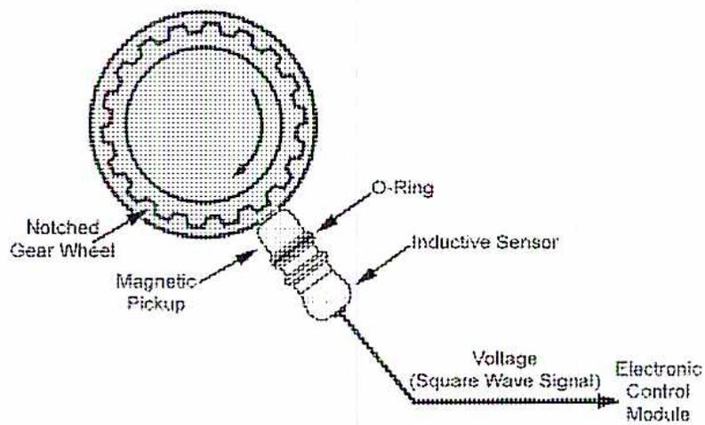
Notched Gear Wheel
Magnetic Pickup
O-Ring
Inductive Sensor
Voltage (Square Wave Signal)
Electronic Control Module
Magnetic Speed Pickup Sensor
Methods for balancing built-up and solid rotors differ because of their construction. With the built up rotors, each wheel or disc is added separately to the shaft. Each wheel is temporarily fitted to a small shaft where they are statically balanced. Metal is usually removed from the wheel or disc to balance it. The balanced wheels are then attached to the permanent rotor.
When all the wheels have been attached, the rotor is then dynamically balanced. Any remaining parts are added to the rotor. These parts include the thrust bearing disc and the overspeed trip assemblies. Then a final dynamic balance is done. The rotor is then ready for installation.
The efficient operation of a turbine depends to a large extent on the maintenance of the correct clearances between fixed and moving elements. Excessive clearances result in increased steam consumption while reduced clearances may result in blade rubbing.
When a turbine is erected the clearances are carefully set and a record is kept at the plant. When the top halves of the casing are removed the clearances should be checked against the record. Care must be taken to ensure that the rotors are in the running position when taking measurements. Provision is usually made to move the rotor axially to a position for lifting from and returning to the casing.
Particular care is necessary with the clearances at the velocity stages which are frequently fitted to the high-pressure end of impulse machines, as shown in the following figure. A thorough check of clearances is essential if any replacement blades, nozzles or packing rings have been fitted.
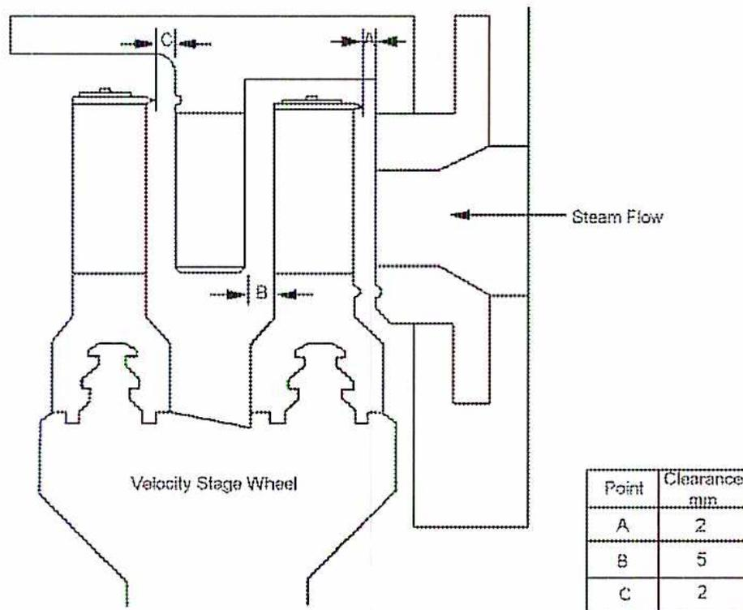
The diagram illustrates a cross-section of a velocity stage wheel within a turbine casing. The wheel is labeled 'Velocity Stage Wheel'. An arrow indicates 'Steam Flow' entering from the right. Three clearance points are marked with double-headed arrows: 'A' at the top between the nozzle and the wheel, 'B' in the middle between the wheel and the casing, and 'C' at the top between the nozzle and the casing. To the right of the diagram is a table:
| Point | Clearance min. |
|---|---|
| A | 2 |
| B | 5 |
| C | 2 |
Velocity Stage Clearances
Deposits develop from carryover in the steam from the boilers and are principally sodium hydroxide (caustic soda) and silica.
Caustic soda melts at \( 315^{\circ}\text{C} \) and is soluble in water, hence it will deposit in areas in the turbine where the temperature is below \( 315^{\circ}\text{C} \) and where the steam moisture content is insufficient to give a blade-washing effect.
Silica vaporizes at pressures above 4150 kPa and is insoluble in water. Deposits of silica may be spread through the turbine blading and will also combine with the soluble deposits.
Turbine blading must be maintained in a clean condition if it is to produce the full designed output of the turbine. Deposits which adhere to the blades decrease the turbine efficiency and output. They may cause an outage or even mechanical damage if not removed. Deposits on turbine blades will gradually reduce the steam passage area and consequently increase the pressure drop through each of the affected stages.
Turbines, especially those with no barring gear, are slow-rolled at 300-500 rev/min. Rotate at this speed for sufficient time to provide even warming and removal of any distortion of the rotors that were developed after the last shutdown. This may take 15-30 minutes or longer.
When the machine has reached normal running speed and is under control of its governor, the overspeed governor trip operation is tested.
The longer the downtime the colder the turbine casings and rotors become. They require more time to be heated to operating temperatures. An 8 hour start would be a typical hot start; a warm start takes approximately 48 hours while a cold startup takes 150 hours.
The barring gear is disengaged and shutdown when the turbine speed reaches 200-300 rev/min, depending upon the manufacturer's run-up program. The barring gear is not designed to run at the normal operating speed of the turbine. It is only used to rotate the turbine rotor at a slow speed to allow uniform cooling.
![A detailed schematic diagram of a condensing steam turbine system with 7 stages of feed water heating. The diagram shows the flow of steam from the boiler through a High-Pressure Turbine, then to a Reheat Turbine, and finally to a Low-Pressure Turbine. The exhaust from the Low-Pressure Turbine goes to a Condenser. The condensate from the condenser is pumped through a series of Low-Pressure Bleed Heaters, then through a Deaer. Htr. (Deaerator), and then through a series of High-Pressure Bleed Heaters before being pumped back to the boiler by a Feedwater Pump. The boiler itself contains an Economizer, Boiler, Reheater, and Superheater. The diagram also shows the extraction of steam from various stages of the turbines to heat the feedwater in the bleed heaters and the deaerator. A Feed Water Drive Turbine is also shown, connected to the boiler feedwater line.](83852ec55d4802521a727926336bedab_img.jpg)
Condensing Turbine with 7 Stages of Feed Water Heating
The items listed on the daily log will vary with the plant, but a typical set of readings would give:
1. Define the following terms:
2. Describe the term Regenerative, as it applies to a surface condenser.
Regenerative is the term used to describe a condenser design that uses wide tube spacing and has open spaces or steam lanes to allow the entering steam to penetrate through the tube nest and come into contact with the condensate falling from the upper tubes. By this means the condensate temperature is maintained equal with the exhaust steam.
3. What are the advantages and disadvantages of a jet condenser as compared to a surface condenser?
Advantages of the jet condenser are:
Disadvantages of jet condensers are:
4. What are the two methods used to deal with the expansion between the turbine exhaust flange and the condenser?
In small installations this is done by bolting the condenser feet rigidly to the foundations and fitting an expansion joint such as a corrugated bellows piece between the turbine exhaust flange and the condenser inlet flange.
For large installations the condenser is bolted to the turbine exhaust flange and supported on springs, which are so proportioned as to just support the mass of the condenser when operating full of cooling water and so relieve the turbine exhaust of any thrust.
5. a) Explain the impact that tube fouling has on the performance of a condenser.
b) Explain the impact that air leakage has on the performance of a condenser.
$$ H_g \text{ at } 36.2^\circ\text{C} = H_g \text{ at } 35^\circ\text{C} + \frac{1.2}{5} (H_g \text{ at } 40^\circ\text{C} - H_g \text{ at } 35^\circ\text{C}) $$
$$ H_g \text{ at } 36.2^\circ\text{C} = 2565.3 \text{ kJ/kgK} + \frac{1.2}{5} (2574.3 \text{ kJ/kgK} - 2565.3 \text{ kJ/kgK}) $$
$$ H_g \text{ at } 36.2^\circ\text{C} = 2565.3 \text{ kJ/kgK} + 0.24 (9 \text{ kJ/kgK}) $$
$$ H_g \text{ at } 36.2^\circ\text{C} = 2565.3 \text{ kJ/kgK} + 2.16 \text{ kJ/kgK} $$
$$ H_g \text{ at } 36.2^\circ\text{C} = 2567.46 \text{ kJ/kgK} $$
$$ H_f \text{ at } 36.2^\circ\text{C} = H_f \text{ at } 35^\circ\text{C} + \frac{1.2}{5} (H_f \text{ at } 40^\circ\text{C} - H_f \text{ at } 35^\circ\text{C}) $$
$$ H_f \text{ at } 36.2^\circ\text{C} = 146.68 \text{ kJ/kgK} + \frac{1.2}{5} (167.57 \text{ kJ/kgK} - 146.68 \text{ kJ/kgK}) $$
$$ H_f \text{ at } 36.2^\circ\text{C} = 146.68 \text{ kJ/kgK} + 0.24 (20.89 \text{ kJ/kgK}) $$
$$ H_f \text{ at } 36.2^\circ\text{C} = 146.68 \text{ kJ/kgK} + 5.02 \text{ kJ/kgK} $$
$$ H_f \text{ at } 36.2^\circ\text{C} = 151.69 \text{ kJ/kgK} $$
$$ \text{Condenser Thermal Efficiency} = \frac{2567.46 \text{ kJ/kgK} - 151.69 \text{ kJ/kgK}}{2567.46 \text{ kJ/kgK}} $$
$$ \text{Condenser Thermal Efficiency} = \frac{2415.77 \text{ kJ/kgK}}{2567.46 \text{ kJ/kgK}} $$
$$ \text{Condenser Thermal Efficiency} = 0.9409 $$
$$ \text{Condenser Thermal Efficiency} = \mathbf{94.09\%} \text{ (Ans.)} $$
To properly observe the performance of a condenser, the operating parameters must be monitored. The required readings or parameters used to determine condenser performance are the:
These readings are compared with the original readings taken when the condenser was first put into service. When the condenser is new, the temperature of the steam exhaust, the condensate, and the cooling water outlet are relatively close. A graph (like the one in Fig. 17 – Objective 3) is developed to show the reduction of the condenser vacuum. Comparisons of these various readings indicate whether the performance of the condenser is deteriorating. In order to troubleshoot condenser performance issues, the following four items are examined:
A comparison of the temperature differential or difference between the exhaust steam temperature and the cooling water outlet is called the condenser terminal difference and this figure is sometimes used as a guide to condenser fouling.
The most frequent cause of low vacuum is slime and mud on the waterside of the tubes. This acts as an insulator and slows down the rate of heat transfer from steam to circulating water. Increased partial pressure due to uncondensed steam adversely affects the vacuum and the temperature at turbine exhaust rises. The temperature of the condensate also rises because the vacuum has dropped. There is no sub-cooling of the condensate because the heat cannot be transmitted through the condenser tubes.
In this case, both the steam exhaust and condensate temperatures rise above normal operating conditions and the cooling water outlet temperature is low.
Increased air leakage into the condenser vacuum creates a widening difference between the temperature of the exhaust steam and the temperature of the condensate. Another way to determine if there is an increase in air infiltrating the condenser is to compare the readings taken from the air flow meter. Faulty air extraction also compounds the problem of air leakage.
A lack of sufficient cooling water reduces the vacuum. If the cooling water system has a flow meter and accumulator, the amount of cooling water flow can be determined for a given period of time. If the amount of cooling water flow is lower than usual, the reason for the reduced flow must be resolved. If the normal pump motor amperes are known, a drop in load on the pump monitor may indicate the reduced flow. An increase in the temperature differential between the cooling water in and out temperatures also indicates reduced flow. If the tubes are clean, the heat transfer rate is normal, and then the reduced quantity of cooling water is raised to a higher temperature.
Referring to the figures, HP steam delivered to the steam nozzle passes into the air chamber with high velocity and produces an area of low pressure in its wake. Air and other gaseous vapours drawn from the condenser into this low-pressure area, become entrained in the jet of steam, and are carried through the diffuser to the discharge.
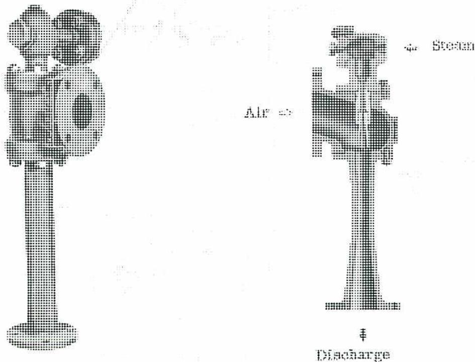
The diagram illustrates the internal components and flow of an air ejector. On the left, a vertical assembly shows a steam nozzle at the top leading into a mixing chamber. Arrows indicate the flow of steam downwards and air being drawn in from the side. On the right, a simplified schematic shows 'Steam' entering from the top, 'Air' entering from the side into a mixing chamber, and the combined mixture being expelled through a diffuser at the bottom, labeled 'Discharge'.
The natural draft has two types of designs. The first one is the open or atmospheric type. It has walls constructed of wooden louvers or slats laid horizontally along the length of the walls and angled so that the air enters the tower in a downward direction. This reduces the tendency to lift the fine water spray out of the top of the tower and gives a better distribution of cooling air across the whole cross section. The movement of air is dependent upon natural convection currents.
The natural draft type of tower is often built with closed sides, which are carried above the level of the water entry. This type is known as the closed or chimney type .
The Mechanical draft also has two different types of designs. They are the:
The forced draft method includes in its arrangement a fan placed at the bottom of the tower to draw air from the surrounding atmosphere and force it upwards across the fill in contra-flow to the falling water.
The induced draft method is the most widely used at the present time. Advantages over the forced draft system are:
Disadvantage of the induced system is the:
Since the condenser is a closed vessel, it is possible for the back pressure to rise until it is above atmospheric pressure. This happens, for example, if the cooling water flow is stopped. The shell is not designed to withstand a pressure from the inside and would soon burst. The atmospheric relief valve is designed to open when the pressure in the condenser rises above atmospheric.
Referring to the following figure, under standard conditions, a vacuum holds the atmospheric valve shut. A water seal, supplied with condensate, prevents air from leaking through. When the pressure reaches 7 kPa, the force on the disc area is greater than the water head on the reverse side, thus, the disc lifts relieving the pressure to atmosphere. The valve is usually fitted with a pivoted lever and a chain brought to operating level. Its operation can be checked when the machine is off load and a manual assist can be supplied in the case of failing to open under emergency conditions.
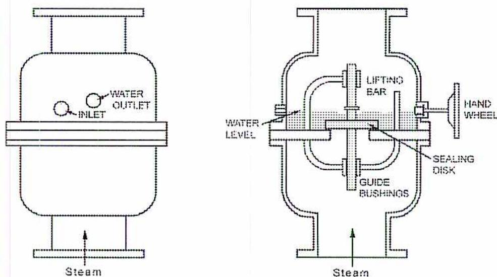
The diagram illustrates the external and internal components of an atmospheric relief valve. The left side shows the external view of a cylindrical vessel with an 'INLET' and 'WATER OUTLET' on the top. An arrow labeled 'Steam' points upwards towards the bottom of the vessel. The right side shows a cross-sectional view of the valve assembly. It includes a 'LIFTING BAR' connected to a 'SEALING DISK' via 'GUIDE BUSHINGS'. A 'WATER LEVEL' is indicated on the left side of the internal assembly. A 'HAND WHEEL' is connected to the lifting bar on the right. An arrow labeled 'Steam' points upwards towards the bottom of the valve housing.
Atmospheric Relief Valve
The four-stroke cycle occurs over two rotations of the engine. It consists of the following steps:
As the piston moves down, air is drawn into the cylinder through the intake port. The exhaust valve is closed. In spark-ignition engines, a mixture of air and fuel is drawn into the cylinder — unless direct fuel injection is used.
The intake and exhaust valves are closed and the air (or air-fuel mixture) is compressed. In spark-ignition engines, an electric spark ignites the air-fuel mixture just before top dead centre (TDC) and starts the combustion process. In compression-ignition engines, or fuel injected spark-ignition engines, fuel is injected prior to top dead centre after which combustion occurs.
In spark-ignition engines, combustion is largely finished at the beginning of the power stroke. The hot gases expand and force the piston down from top dead centre. The exhaust valve opens just before the end of the stroke. In compression-ignition engines, combustion continues for most of the power stroke.
The exhaust valve remains open and the products of combustion are exhausted to the atmosphere. At the end of this stroke, the exhaust valve closes and the intake valve opens. The process then repeats itself.
Spark Ignition
In spark-ignition engines, a spark ignites the air-fuel mixture. Fuel can be pre-mixed in a carburetor or injected directly into the cylinder.
Compression Ignition
In compression-ignition engines, spontaneous ignition occurs due to the rise in temperature caused by high compression ratios. This results in a more efficient engine.
Turbochargers
Turbochargers use a compressor which is attached to a turbine driven by exhaust gases. Turbochargers are common on many engines even though they increase the mechanical complexity of the engine and its control.
Superchargers
Superchargers make use of a blower or compressor that is directly coupled to the engine. Superchargers are not common in industrial applications because they are less efficient than turbochargers. However, they respond faster to load changes. Superchargers usually consist of a positive displacement compressor.
In a lean-burn fuel system, the main air/gas mixer (carburetor), which has a governor controlled throttle, mixes the fuel and air. A pressure balance line between the carburetor and main gas pressure regulator maintains a constant gas-over-air pressure differential. The main gas pressure regulator ensures that natural gas is provided to the main air/gas mixer, and to the prechamber air/gas mixer, at the correct pressure. The prechamber air-fuel mixture is admitted into the cylinder through a separate manifold and special admission valves.
![Schematic diagram of a Lean Burn Fuel System. The diagram shows an engine connected to a prechamber manifold and an intake manifold. The intake manifold is connected to a governor-controlled throttle, which is then connected to a main air/gas mixer & control unit. This unit is also connected to a turbocharged compressor. The main air/gas mixer & control unit is connected to a pressure balance line, which is connected to a main gas pressure regulator. The main gas pressure regulator is connected to a gas source. The main gas pressure regulator is also connected to a prechamber air/gas mixer & control unit. The prechamber air/gas mixer & control unit is connected to a prechamber air/fuel source. The engine is connected to the prechamber air/fuel source. The engine is also connected to a pressure control signal, which is connected to the prechamber air/gas mixer & control unit.](b230b8f21d8e82d55c0d311c8c32ef73_img.jpg)
The diagram illustrates a lean burn fuel system architecture. At the top, a 'Prechamber Manifold' is connected to an 'Engine'. Below the engine is an 'Intake Manifold'. A 'Governor Controlled Throttle' is positioned on the intake manifold. Downstream of the throttle is a 'Main Air / Gas Mixer & Control' unit. This unit receives 'Air' from a 'Turbocharged Compressor' and 'Gas' from a 'Main Gas Pressure Regulator'. A 'Pressure Balance Line' connects this mixer to the gas regulator. The 'Main Air / Gas Mixer & Control' unit also sends a 'Pressure Control Signal' to a 'Prechamber Air / Gas Mixer & Control' unit. This second mixer receives 'Air' from the intake manifold and 'Gas' from the 'Main Gas Pressure Regulator'. Its output, labeled 'Prechamber Air / Fuel', is directed back to the 'Prechamber Manifold'.
Lean Burn Fuel System
(Courtesy of Waukesha Engine)
5. Describe the three major purposes for engine cooling.
The purposes of engine cooling are to:
Engine efficiency is improved when more air is inducted into the cylinder. When the cylinder walls are cooled, more air can be drawn into the cylinder.
In spark-ignition engines, combustion is enhanced by having cooler cylinder walls which will also inhibit knock and detonation.
Mechanical reliability is adversely affected by high metal temperatures and thermal strain. In addition, if the temperature of the top rings on the cylinder exceeds 200°C, lubricants will degrade and fail to provide adequate protection. Thus, it is very important that the cooling system function properly since it has to remove about 20%-40% of the energy input into the engine.
Viscosity measures the resistance of a fluid to deformation under pressure. Oil with a higher viscosity is better able to withstand the friction forces from two adjacent components. However, friction losses are higher with a higher viscosity, so the proper level of viscosity has to be determined for each application. Since viscosity decreases with temperature, operating temperatures have to be taken into consideration.
Additives are present in lube oils to improve performance, to prevent deterioration, and to combat contaminants. Common additives are:
Acidity must be closely controlled because acids can corrode wetted oil system surfaces.
Oil quality can deteriorate over time due to heat and use. It can be contaminated by particles caused by the internal wear of engine components, or by external contaminants such as dirt or glycol.
Oil can also be affected by fuel contaminants such as hydrogen sulphide (H 2 S). If sulphur compounds cannot be totally removed from the fuel, additional precautions, such as enhanced oil sampling and reduced oil replacement intervals, need to be taken. The engine manufacturer should be consulted on recommended lube oil type.
Protection for general engine operation may include:
Fuel system protection may include:
Cooling system protection may include:
Oil system protection may include:
Protection for combustion systems may include:
During startup, relevant safety parameters include:
Steps required for the pre-start inspection vary with the type of startup. For automatic starting and when the engine is in a remote location, these steps cannot be carried out but protective devices minimize the risks in the control system.
If the equipment is used frequently and no maintenance work has been done, only a few checks need to be carried out. These may include a walk-around and visual inspection of the engine to check for:
The startup sequence following depends on the type of engine and starting system.
A shutdown is either normal or emergency.
Upon activation of a normal shutdown, the load is reduced and the engine operates at idle speed for 15-30 minutes. Closing the fuel valve first and shortly afterwards (typically 10 seconds) stopping the ignition, stops the engine so that the fuel downstream of the fuel valve is exhausted and not allowed to collect in the engine.
The prelube pump is operated for a predetermined time as a post-lube to assist with lubrication on run-down and for cooling.
In an emergency shutdown, there is no cooldown period and the fuel valve closes immediately. If the emergency does not endanger the operator or the condition of the engine, the ignition remains on for a short period so that all of the fuel is burned and not left in the engine and the exhaust system. For safety-related emergencies, the ignition is stopped at the same time as the fuel valve is closed. In these cases, when restarted, the engine should go through a purge cycle and crank for approximately 10 seconds with the fuel valve closed and the ignition system off.
Use any of the following tasks.
Routine maintenance of the lubrication system may include:
4. What parts of the cylinder head wear with use?
Typical wear will occur with valve seats and valve guides.
5. What causes blow-by of exhaust gases into the crankcase?
Blow-by is caused either by worn piston rings, worn cylinder sleeves (or liners) or a combination of both of these factors.
6. What are the three aspects of troubleshooting described in a typical troubleshooting chart?
There are three aspects to troubleshooting:
The selection of a gas turbine engine for a specific application depends on factors such as:
The performance rating and required range of power output are important factors to consider when choosing a specific gas turbine. Gas turbines operate most efficiently when running full loaded. Although they can operate down to 50% of full load rating, the lower operating ranges will cause the turbine output efficiency to drop substantially, down into the 30% to 40% range.
This makes it important to choose a gas turbine that operates at, or near, its maximum power capabilities. Smaller gas turbines are less efficient, although waste heat recovery or combined cycle applications can be very efficient. For short-term peak power applications, a gas turbine can sometimes be run at higher than rated power output, but this practice will reduce the life cycle of the turbine and cause an increase in maintenance and repair costs.
Weight and size restrictions usually favour gas turbines over other types of engines, such as reciprocating internal combustion engines, especially for higher power applications. Aero-derivative engines normally provide the lowest-weight solution.
The type of fuel available needs to be considered. The cleanest and most accessible fuel should be used. Pipeline quality natural gas is desirable because it delivers the most efficient, cost-effective, and environmentally acceptable solution. Lower quality gaseous fuels such as landfill or sewage gas require special handling and delivery systems and, due to their lower kJ values, will result in lower power output and turbine efficiencies.
Liquid fuel, such as kerosene, provides reliable operation but may be unsuitable where emissions are an issue, or where fuel sources are not easily accessible. Lower grade liquid fuels may be cost-effective, but require fuel treatment and could result in higher maintenance costs.
Maintenance has to be taken into consideration before a final selection is made. This includes the availability of skilled personnel, spare parts, and other support requirements.
Life cycle costs include not only the initial capital investment, but also fuel, operating, and maintenance costs. Simple cycle gas turbines are now efficient enough to compete with other types of engines on a cost basis. The use of gas turbines in combined cycle applications provides an efficient solution over the life cycle of the engine.
When selecting a gas turbine engine, it is important to consult with manufacturers on recommendations for proper application, engine rating, and equipment configuration.
The gas turbine thermodynamic cycle, called the Brayton cycle, is shown in the following figure.. It consists of four steps:
Note: a significant part of the work of the turbine ( \( W_{33'} \) ) is used to run the compressor. The remaining energy extracted ( \( W_{3'4} \) ) is available to drive the load.
![P-V diagram of the Brayton Cycle showing pressure (P) vs volume (V). The cycle starts at point 1 (START), goes to point 2 (compression), then to point 3 (combustion), then to point 3' (turbine expansion), then to point 4 (exhaust), and back to point 1. Heat added through combustion is Q23. Output work to run compressor is W33'. Pressure is increased through compressor as Volume is reduced. Exhaust heat is Q41. Useful Work available for shaft power or thrust is W3'4. The diagram is labeled 'The Brayton Cycle'.](36ac3e730a00d3f42d3400f5709f641a_img.jpg)
The diagram illustrates the Brayton Cycle on a Pressure (P) vs. Volume (V) plot. The cycle consists of the following states and processes:
The Brayton Cycle
3. Explain the advantages of a fired HRSG system over an unfired unit.
The advantages of the fired system are that it:
4. Explain the advantages for using intercooling to improve the efficiency of the basic gas turbine cycle.
In some gas turbines, inlet air is compressed in two stages using a dual shaft arrangement. The air is cooled between the stages in a heat exchanger, or intercooler. Since isothermal compression (compression without an increase in air temperature) takes less work than adiabatic compression (compression without removing heat which increases the air temperature), more turbine power is available for the output load. Another advantage of intercooling is that the total mass of air that needs to be circulated through the cycle per kW of energy produced is reduced.
The following figure shows a fairly common aero-derivative design that uses a two-shaft arrangement for the engine, and a third shaft for the power turbine. The low-pressure compressor and turbine are connected by a shaft fitted inside the hollow shaft connecting the high-pressure compressor and turbine. Mechanically, this design is more complicated (especially for the bearings), but offers greater efficiency and operational flexibility.
An even more complicated layout positions the load at the cold end, which requires three shafts on the same centerline.
![Two schematic diagrams of gas turbine shaft layouts. Diagram (a) 'Hot End Drive' shows a High Pressure Compressor connected to a High Pressure Turbine, which is connected to a Load. A Low Pressure Compressor is connected to a Low Pressure Turbine, which is connected to a Power Turbine. Diagram (b) 'Cold End Drive' shows a Load connected to a Low Pressure Compressor, which is connected to a High Pressure Turbine, which is connected to a High Pressure Compressor. Both diagrams show a Power Turbine connected to a Load.](ff0952ef692c9d960ce5f6708bcc9711_img.jpg)
(a) Hot End Drive
(b) Cold End Drive
Shaft Layouts – Triple Shaft
a) Annular
The annular combustor consists of a singular flame tube in an annular shape. It is smaller in size than the can burner and does not have the problem of combustion propagation between chambers. Combustion takes place in a single combustion liner, with an inner and outer casing, that encircles the centerline of the gas turbine. Fuel nozzles are evenly spaced around the ring. This is a very simple design that minimizes the complexity of the combustion and dilution air flows.
b) Can-Annular
In the can-annular design combustor, combustion takes place in multiple combustors (also called combustion cans) placed around the centerline of the gas turbine. Some aero-derivative gas turbines use this straight-through combustor design since it minimizes the front area of the turbine.
Inlet air to the gas turbine is cooled by passing it through a finned coil of tubes which uses either NH 3 (Ammonia) or HFC-134a refrigerant as the cooling medium. The air temperature must not be less than 5°C to prevent the formation of ice on the coils. Refrigeration will always provide the design inlet temperature regardless of the ambient conditions, unlike the evaporative systems which lose effectiveness in high humidity conditions.
![Diagram of a Refrigeration Air Cooling System for a gas turbine. The diagram shows a 'Mechanical Refrigeration Machine' connected to a 'Combustion Turbine'. The 'Mechanical Refrigeration Machine' has an 'Ammonia Suction Line' and an 'Ammonia Liquid Line'. The 'Ammonia Liquid Line' passes through a 'Condensate Drip Pan' and then to a 'Finned Coil' (evaporator) where it cools the 'Combustion Air'. The 'Combustion Air' is drawn from the 'Air Filter' and passes through the 'Finned Coil' before entering the 'Combustion Turbine'. The 'Combustion Turbine' is connected to a 'Generator' (indicated by a circle with a dot). The 'Combustion Turbine' also receives 'Fuel' and produces 'Exhaust Gas'.](4ee27dbf5ef12e7b58b0ef0937bc5a5e_img.jpg)
Refrigeration Air Cooling System
The following figure shows the lube oil system for an aero-derivative gas turbine — the General Electric LM6000 (used for power generation). It lubricates the gas turbine and power turbine bearings. The driven equipment is handled by a separate system.
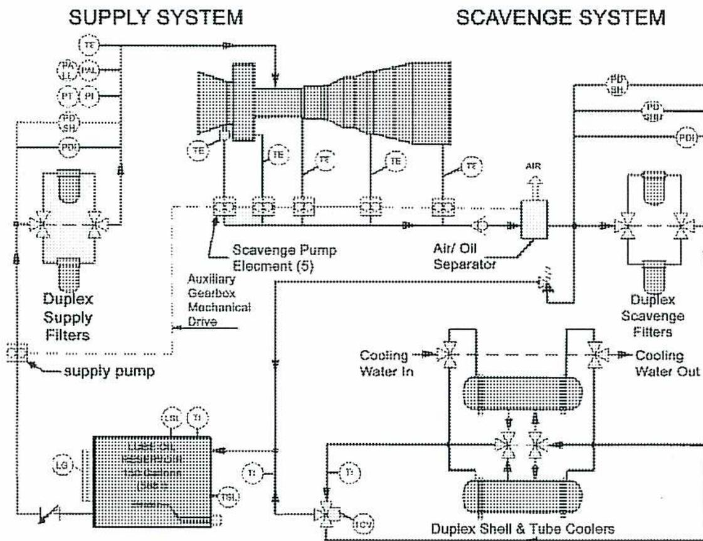
The diagram illustrates the lube oil system for the General Electric LM6000, organized into two primary sections: the SUPPLY SYSTEM on the left and the SCAVENGE SYSTEM on the right.
General Electric LM6000 Lube Oil System
(Courtesy of GE Power Systems)
This lube oil system is divided into two sections: a supply system and a scavenge system. To prevent corrosion, all piping, fittings, and the reservoir are Type 304 stainless steel. The lube oil used is synthetic type oil suitable for high temperatures.
The oil reservoir contains approximately 500L in a 568L tank. It is fitted with protective devices to guard against low oil level and low oil temperature. A thermostatically controlled heater in the lube oil tank reservoir ensures that a minimum oil temperature is maintained to reduce the stresses on the turbine on startup and to keep moisture from condensing in the reservoir and contaminating the oil.
An electric motor driven auxiliary lube oil pump is used to initially pressurize the system and satisfy the permissives to allow the turbine to start.
A positive displacement pump, driven by an auxiliary gearbox on the engine, provides the required pressure to the bearings. After it leaves the pump, the oil is filtered through a duplex full-flow filter.
The oil supply is protected by switches for:
Then, the oil flows through the bearings and accumulates in the bearing sumps. The oil temperature is measured at each scavenge line in case of bearing problems.
Scavenge pumps (also driven by the auxiliary gearbox) provide pressure to flow the oil from the bearing sumps through another set of filters, and then through duplex thermostatically controlled water-cooled coolers. Then, the oil flows back into the reservoir.
Chip detectors are often located in the sumps to detect metal particles. If a bearing becomes damaged, metal particles break away and become entrained in the oil. Chip detectors are basically magnets that attract metal particles and detect when they accumulate. When the chip detector alarms, the detector will be removed and the particles that have been captured by the detector will be analyzed. The quantity and type of material collected will indicate:
The General Electric LM6000 fuel gas system is representative of most gas turbines.
A fuel gas compressor is installed in case extra compression is required to boost a low pressure fuel source. The pressure of the fuel gas has to be higher than the pressure of the compressed air delivered to the combustion section. A pressure regulator and relief valve is installed to ensure that the fuel gas supply is maintained at the correct pressure. Low and high pressure switches protect against over or under pressure conditions.
A fuel filter ensures that contaminants do not enter the fuel system. Some systems use heat exchangers to raise the fuel gas to its optimum temperature to ensure that:
A fuel gas flow meter monitors fuel consumption, but is not used for fuel control. Fuel is metered and controlled by the fuel metering valve, one of the most important components of the fuel gas system. It is also an essential component of the startup and shutdown sequence. Fuel valves are normally electrically controlled with hydraulic actuation, but electrically actuated valves are becoming more common. The fuel metering valve ensures that the correct amount of fuel is provided according to the operating conditions. It precisely controls the flow of fuel to ensure that maximum turbine temperature is not exceeded. The rate at which the fuel valve is opened and closed is limited to prevent temperature increases that might damage the turbine. Additional shutoff valves are provided for emergency purposes. Additional shutoff valves are provided for emergency purposes.
![Schematic diagram of the General Electric LM6000 Fuel Gas System. The diagram shows the flow of fuel gas from a compressor through various components to a fuel gas manifold and nozzles. The top line shows the fuel gas compressor connected to a fuel gas scrubber, a bypass valve, an FSD valve, a pressure regulator, and a duplex filter separator. The bottom line shows the fuel gas flow meter, a 100 mesh strainer, a primary shut off valve, a fuel metering valve, and a secondary shut off valve. Various sensors (PT, PS1, PS2, FI, TE) are connected to the system and to a unit control panel.](c85ded401105f62f2d6ff26b3b5eb4af_img.jpg)
The diagram illustrates the fuel gas system for the General Electric LM6000. The fuel gas is supplied from a FUEL GAS COMPRESSOR through a series of components: a FUEL GAS SCRUBBER , a BYPASS VALVE , an FSD VALVE , a PRESSURE REGULATOR , and a DUPLEX FILTER SEPARATOR . The duplex filter separator is connected to a To unit control panel . The fuel gas then passes through a 100 mesh (149 micron) strainer and a FUEL GAS FLOW METER . The flow meter is connected to a TE (Temperature Element) and a FI (Flow Indicator). The fuel gas then passes through a PRIMARY SHUT OFF VALVE , a FUEL METERING VALVE , and a SECONDARY SHUT OFF VALVE . The fuel metering valve is connected to a EM (Electro-Mechanical) actuator. The fuel gas then passes through a Fuel Gas Manifold and To 30 Fuel Gas Nozzles . Various sensors are connected to the system: PT (Pressure Transmitter) sensors are located at the inlet of the flow meter, after the primary shut off valve, and before the fuel gas manifold. PS1 (Pressure Switch) and PS2 (Pressure Switch) sensors are located at the inlet of the flow meter. PI (Pressure Indicator) sensors are located at the inlet of the flow meter, after the primary shut off valve, and before the fuel gas manifold. All sensors are connected to a To Unit Control Panel .
General Electric LM6000 Fuel Gas System
(Courtesy of GE Power Systems)
10. With the use of simple equations, describe how ammonia is used in the catalytic reduction of NO x emissions from the exhaust gases of a gas turbine.
NO x emissions are removed from the burner exhaust gases through the use of a catalyst. In one process, ammonia is added to the flue gas prior to the gas passing over a catalyst. The catalyst enables the ammonia to react chemically with the NO x converting it to molecular nitrogen and water. The catalyst used is a combination of titanium and vanadium oxides. This system promotes the removal of up to 90% of nitrogen oxides from the flue gases.
The ammonia reacts with both the nitrogen monoxide (NO) and nitrogen dioxide (NO 2 )
Reaction with NO:
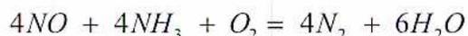
Reaction with NO 2 :
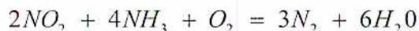
The NO and NO 2 react with the ammonia to form nitrogen and water. The nitrogen is harmless and can be released back into the atmosphere.
The major function of a control system is to ensure correct sequencing during startup and shutdown. The control system must safely control the flow of fuel to the combustors to ensure that the gas turbine efficiently drives the process load under all conditions. It positions the fuel metering valve based upon load or demand (e.g. generator frequency or compressor discharge pressure).
Changes in demand loading requires a very controlled “ramp up” or “ramp down” response from the gas turbine control system as a rapid increase or decrease in acceleration can cause surge, flame out or other combustion problems..
Depending on ambient temperature, there are maximum limits to operation. At higher ambient temperatures, a gas turbine is limited by exhaust gas temperature to ensure that temperature limits for combustion and turbine section components are not exceeded. At lower ambient temperatures, a gas turbine is limited by rotor speed to regulate the stresses placed on rotor blades. For dual shaft gas turbines, there are minimum and maximum limits on power turbine speed.
Additional controls are required for bleed valves and variable guide vanes. Sometimes, these controls are independent, but it is becoming common to include them in the main gas turbine control system. Both bleed valve and variable guide vane operations are controlled by the main gas turbine controller using a calculation embedded into the logic sequencing that matches their positions to a specific startup time line and engine speed.
Another function of the control system is to indicate when abnormal levels are reached by generating an alarm, or by shutting down the gas turbine under certain conditions.
2. List the monitoring points that are associated with the following gas turbine system protection.
Oil system protection includes:
Combustion protection includes:
3. What steps are followed to prepare a gas turbine for startup?
If the equipment is used frequently and maintenance work has not been done recently, only a few checks are required. These may include a walk-around and visual inspection of the engine to check for:
If the equipment has been shut down for an extended period of time, the operator should check that all the following auxiliary equipment and support systems are activated and energized:
These systems may have been shutdown and need to be activated before the startup is initiated.
If routine, minor, or major maintenance has been done recently, the work area has to be cleaned and all tools, parts and supplies removed prior to startup. Shutoff valves may need to be opened or unlocked. Other maintenance-specific steps may need to be taken, and a more thorough pre-start inspection may be required.
The first step in a controlled shutdown is to reduce the speed, over a specified period of time, down to “zero load speed”. As the speed is being reduced, the load on the turbine (electric generator or gas compressor) will be reduced and the entire unit will be allowed to cool down under even and stable conditions. Once at idle speed, the power turbine will be unloaded completely by disconnecting from the main electrical grid or fully opening the recycle valves if the load is a gas compressor. During this cool down period, the turbine can be quickly loaded back up if the need arises.
When the cooldown timer timeframe has been completed or the specific minimum set temperatures across the machine have been reached, the fuel valve is closed and combustion is eliminated. The rotor speed will decrease and the machine will stop.
As the speed drops, the main lube oil pump (if driven off the rotor) loses pressure. At a specified point, usually based on oil pressure, the prelube pump starts and continues to lubricate and cool the bearings for a specified time period. The enclosure or building fans shut off.
On most heavy-duty gas turbines, the turning gear activates at either 15% of operating speed or immediately after the rotor stops turning. The turning gear rotates the rotor at a slow speed for a certain time period — ranging from 5 hours for a small gas turbine to as many as 60 hours for a very large gas turbine. Restart at any time during this time period is allowed. This cooldown period prevents bowing of the rotor, which would cause high vibration on the next startup and could lock-up the rotor and prevent starter rotation.
5. Discuss the methods used to waterwash gas turbine blades, including the type of cleaner used.
The most effective method of compressor cleaning is the offline waterwash. This consists of stopping the unit, injecting waterwash fluids into the intake of the compressor while running on the starter, and then restarting the unit. It is also referred to as the crank-soak method. Online water washing is not as effective as off-line although it is still a viable alternative if downtime is not acceptable.
To remove oily substances, additional cleaning agents and solvents are mixed with the water. Acceptable cleaners are often specified by gas turbine vendors. However, the most effective cleaning agents are also the most toxic and require special handling.
If the temperature is less than 4°C, a 1:1 mixture of water and ethylene glycol is recommended to prevent icing. The gas turbine vendor should be consulted since commercial and automotive anti-freeze products are usually not acceptable.
6. Discuss the steps involved in the overhaul of an aeroderivative gas turbine.
| Symptom | Probable Cause | Remedy |
|---|---|---|
| Vibration high | Problem with vibration transducer or wiring | Check vibration transducer or wiring |
| Alarm and shutdown levels not correct | Reset alarm and shutdown levels | |
| Engine mountings too tight or seized | Check engine mountings | |
| Major engine problem or internal failure | Perform borescope. If necessary schedule major overhaul |
Crude oil is preheated and continuously pumped into the tower at the approximate level shown. Heat within the tower is applied by means of steam jets streaming directly into the charge of crude oil. The crude oil boils and the vapors produced rise into the tower. These vapors must pass through the bubble caps in each tray in their progress up the tower and as their temperature falls, condensation of the various constituents takes place.
![A schematic diagram of a fractionating tower used for distilling crude oil. The tower is a vertical column containing several horizontal trays. Each tray is equipped with bubble caps, which are shown as inverted U-shaped structures. Heated crude oil is introduced into the lower part of the tower. At the very bottom, steam jets are shown entering the oil. As the oil heats up, vapors rise through the tower. On the left side, labels from top to bottom are: 'Bubble Caps', 'Heated Crude oil', and 'Steam'. On the right side, labels from top to bottom are: 'Gasoline' (at the top), 'Trays' (pointing to one of the horizontal plates), 'Kerosene', 'Gas Oil (Light Fuel Oils) (Cracking Stock)', 'Light Lubricating Oil (Spindle Oils)', and 'Undistilled Residue Asphalt or Lubricating Oil Stock Depending Upon Type of Crude' (at the bottom).](f6d72d7c790e7f585532140f3971639a_img.jpg)
Fractionating Tower
2. Briefly describe the following:
3. a) Explain what occurs when lubricating oils react with oxygen.
b) Briefly describe various causes for this reaction to be accelerated.
4. Give a brief explanation of the following lubrication additives.
5. What are the advantages to planning the entire plant lubrication program as one combined operation?
In almost any plant it will be advantageous to plan the entire plant lubrication as one combined operation. Savings will be effected through the:
6. With the aid of a simple sketch, explain the operation of a lube oil centrifuge.
In the centrifuge, centrifugal force is produced by rotating the liquid at high speeds, up to 15 000 rev/min. This facilitates the separation of the contaminants that are heavier than oil. Sedimentation and separation are continuous and very fast. When liquid and solid particles in a liquid mixture are subjected to the centrifugal force in a separator bowl, it takes only a few seconds to achieve what takes many hours in a tank under the influence of gravity.
The centrifugal bowl is equipped with a series of conical shaped discs which divide the feed material into layers less than .13 cm in thickness. The oil, water and solids are fed into the top inlet A. The still mixed feed material travels down the inlet tube (B) into the centrifuge bowl.
The feed material is forced upward through the holes in the intermediate discs (C) and into the spaces between them. This is where the centrifugal action immediately separates the feed material into the heavy and light phases (oil, water, and solids.)
The solids are thrown directly to the bowl wall (D). The oil, with its lighter density, is displaced inward and travels upward through the space around the inlet tube to the light phase discharge (E). The water phase, thrown outward by centrifugal force, is displaced by the incoming feed material and travels upward along the outer edge of the bowl to the heavy phase discharge (F). Solids may be retained in the bowl or discharged immediately, depending on bowl design and operating requirements.
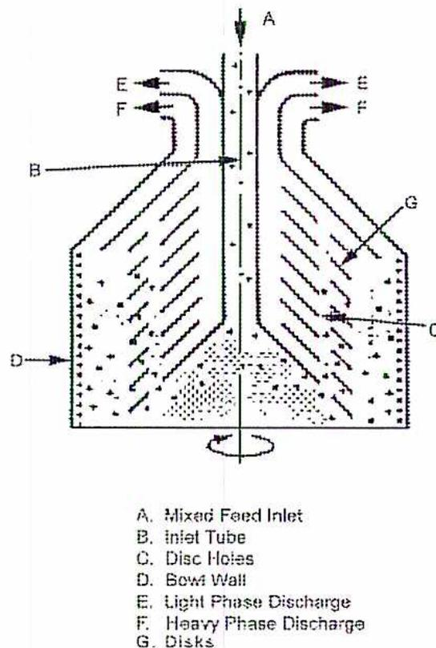
A. Mixed Feed Inlet
B. Inlet Tube
C. Disc Holes
D. Bowl Wall
E. Light Phase Discharge
F. Heavy Phase Discharge
G. Disks
The hydro-dynamics theory of lubrication involves the complete separation of opposing surfaces by a fluid film. The following diagrams give a graphic analysis of this action.
Fig. (a) and (b) show a surface X moving at constant velocity across a stationary surface Y with an oil film between the two. In Fig. (a), the X and Y surfaces are parallel. In Fig. (b), the X surface is at a slight angle. In each case the triangle abc represents the quantity of oil entering between the surfaces and the triangle a'b'c' the quantity of oil leaving.
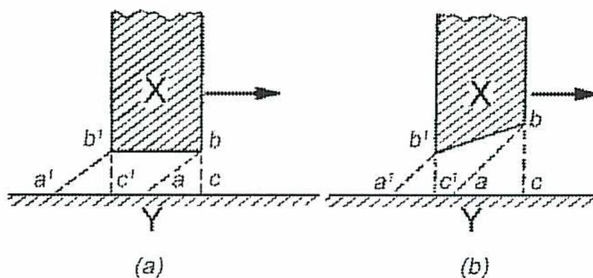
The image contains two diagrams, (a) and (b), illustrating hydrodynamic theory. Both diagrams show a hatched block labeled 'X' moving to the right over a horizontal surface labeled 'Y'. In diagram (a), the block is at a uniform height above the surface. Points a, b, c and a', b', c' are marked to show velocity profiles. In diagram (b), the block is tilted, creating a wedge-shaped oil film where the entry height bc is greater than the exit height b'c'.
In Fig. (a), \( bc = b'c' \) , the triangles are equal, and the quantity of oil entering the bearing equals the quantity leaving; there is therefore no upward force acting to separate the surfaces X and Y.
In Fig. (b) \( bc \) is greater than \( b'c' \) and \( ac \) than \( a'c' \) . Therefore triangle \( abc \) is greater than \( a'b'c' \) . Thus more oil can enter than is able to leave and a vertical force results which tends to separate X from Y.
In both Fig. (a) and 20 (b), there is a horizontal force shearing the oil but only in (b) is there a resultant vertical force. This simple basic principle explains why moving surfaces must be designed to provide a wedge if full fluid film lubrication is to be achieved, and machinery is to carry high loads without wear.
The following properties contribute to the attractiveness and economy of a given pipe material:
$$ P = 17.25 \text{ MPa (given)} $$
$$ D_o = 406.40 \text{ mm (Table 1)} $$
$$ SE = 37.92 \text{ MPa (Table 1A)} $$
$$ y = 0.7 \text{ (Table 3)} $$
$$ A = 0.000 $$
$$ t_m = \frac{PD_o}{2(SE + P_y)} + A $$
$$ t_m = \frac{17.25 \text{ MPa} \times 406.40 \text{ mm}}{2(37.92 \text{ MPa} + 17.25 \times 0.7)} + 0 $$
$$ t_m = \frac{7010.40}{2(49.995)} + 0 $$
$$ t_m = \frac{7010.40}{99.99} + 0 $$
$$ t_m = 70.11 + 0 $$
$$ t_m = 70.11 \text{ mm} $$
Using a manufacturer's tolerance allowance of 12.5%, then the required wall thickness is:
$$ 70.11 \times 1.125 = 78.87 \text{ mm (Ans.)} $$
$$ \begin{aligned} P &= \frac{2 SE (t_m - A)}{D_o - 2y (t_m - A)} \\ &= \frac{2 \times 37.92 (78.87 - 0)}{406.40 - 2 \times 0.7 (78.87 - 0)} \\ &= \frac{2 \times 37.92 (78.87)}{406.40 - 2 \times 0.7 (78.87)} \\ &= \frac{2 \times 2990.75}{406.40 - 2 \times 55.21} \\ &= \frac{5981.50}{406.40 - 110.42} \\ &= \frac{5981.50}{295.98} \\ &= \mathbf{20.21 \text{ MPa}} \end{aligned} $$
The TOFD technique is an effective fully computerized inspection method for the detection and sizing of flaws with a high rate of accuracy. With the TOFD technique, which applies diffraction signals instead of reflection signals type, location, geometry or orientation of the anomalies is irrelevant for detection and sizing. In the TOFD technique, a transmitter and a receiver are placed on equal distances of the weld. The scanner with the probes is moved in most cases swiftly parallel with the weld.
TOFD is utilized over the entirety of the weld seam lengths for expedient detection and classification of inherent flaws and creep damage. The small, high intensity beam spot achieved in this inspection has proven effective in detecting incipient creep damage to a very early form of cavitation.
The following figure shows the typical TOFD arrangement for the detection of deep-seated damage, with the probes set relatively broadly such that the intersection point of the beam centers lies at a depth of approximately 2/3 wall. This inspection can be implemented in a single scan pass, with the transducers straddling the weld.
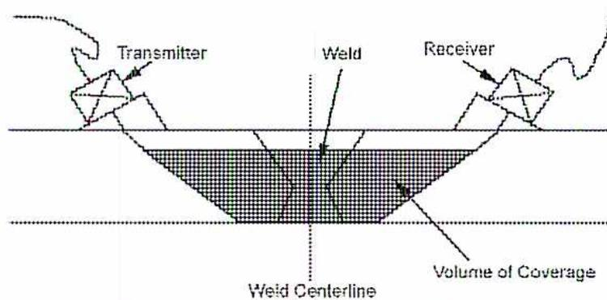
TOFD Transducer Configuration for Deep Coverage
4. Explain how high temperatures affect the tensile strength of piping.
Tensile Strength
As the temperature is increased, the properties of the pipe material will change. The tensile strength of the material will rapidly decrease above a certain temperature. This is indicated in Table 1A of the ASME Code, Section II, Part D. For any material listed in this table, the working stress allowed will decrease as the temperature increases. For example, steel pipe of material SA-53B is allowed a working stress of 103 425 kPa at 343°C. But, at a temperature of 427°C, the working stress allowed is only 74 466 kPa.
5. Give the advantages and disadvantages of the following:
a) Expansion Bends
Advantages of expansion bends are:
Disadvantages of expansion bends are:
Advantages of slip expansion joints are:
Disadvantages of slip expansion joints are:
Advantages of corrugated expansion joints are:
Disadvantages of corrugated expansion joints are
In the case of a valve being quickly closed in a pipeline through which water is flowing, the first effect is the sudden decrease in the velocity of the water and a correspondingly increase in pressure at the valve. This causes a pressure wave to travel back upstream to the inlet end of the pipe where it reverses and surges back and forth through the pipe, getting weaker with each successive reversal. This pressure wave due to water hammer is in addition to the normal water pressure within the pipe and depends upon the magnitude and rate of change in velocity as well as the elasticity of the pipe and of the water. Complete stoppage of flow is not necessary to produce water hammer as any sudden change in velocity will bring it about to a greater or less degree depending upon the above conditions.
Where too rapid closing of a valve is the cause of the water hammer, the remedy is to ensure that the valve is closed slowly. The period of effective closing of a gate valve takes place in the last 20% of the valve travel and this portion should be undertaken as slowly as possible. If the valve is equipped with a bypass, the bypass should be opened to equalize the pressure on both sides of the valve. Then the bypass valve is closed.
When opening a gate valve, the first 20% of the valve travel is the most critical portion. If so equipped, the bypass should be opened to allow for pressure equalization. Then the valve should be opened as slowly as possible. As a general rule, all valves should be opened and closed slowly and cautiously.
Showing interior details with hidden feature lines in orthographic drawings is very difficult. For internal details in orthographic drawings, “Sectioning” is used. It is a cutaway type of view showing internal details.
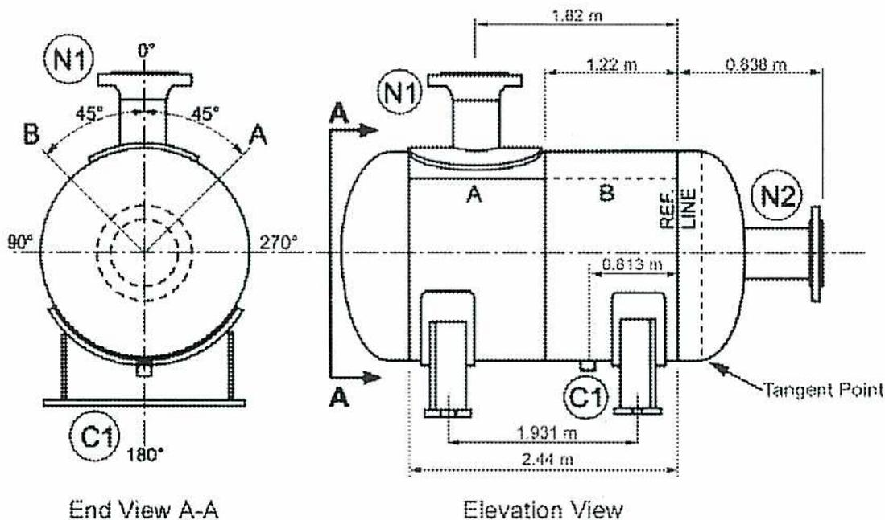
The figure consists of two orthographic views of a pressure vessel. The 'End View A-A' on the left shows a circular cross-section with a central vertical axis. Nozzle N1 is at the top (0°), nozzle N2 is at the bottom (180°), and a cutout C1 is on the right (90°). Section lines A-A, B-B, and C-C are indicated at 45° angles. The 'Elevation View' on the right shows the vessel as a horizontal cylinder. Nozzle N1 is at the top left, nozzle N2 is at the right end, and cutout C1 is at the bottom. A vertical dashed line labeled 'REF. LINE' is positioned 1.22 m from the left end. The distance from the center of N1 to this reference line is 1.82 m. The distance from the reference line to the tangent point of the N2 flange is 0.838 m. Other dimensions include 1.931 m from the left end to the center of C1, 2.44 m from the left end to the center of C1, and 0.813 m from the center of C1 to the reference line.
Pressure Vessel Drawing with Dimensions
Distance from the centre of nozzle N1 to the outside of the flange on N2:
$$ \begin{aligned} &= \text{Centre of N1 to reference line} + \text{reference line to outside of flange N2} \\ &= 1.82 \text{ m} + 0.838 \text{ m} \\ &= 2.658 \text{ m (Ans.)} \end{aligned} $$
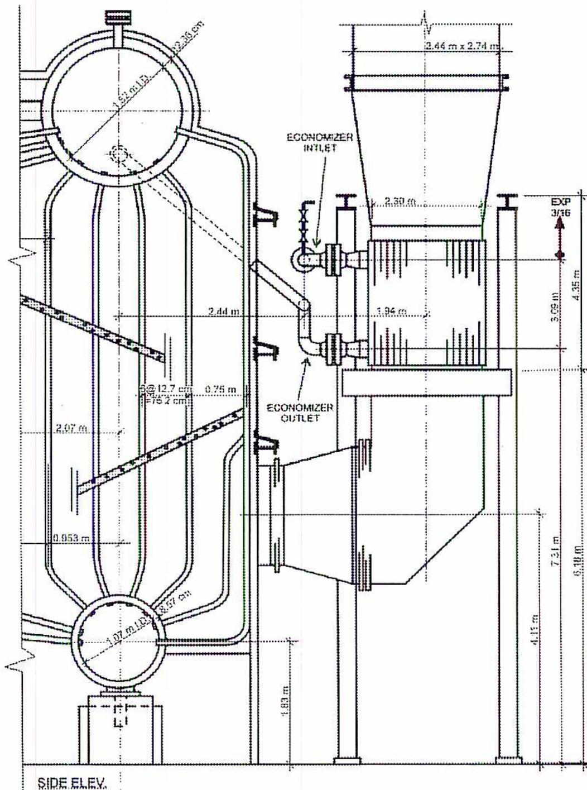
The diagram is a side elevation of a boiler and economizer system. It features two main cylindrical drums: a steam drum at the top and a mud drum at the bottom. The steam drum has a diameter of 1.52 m (ID) and a wall thickness of 12.38 cm. The mud drum has a diameter of 1.07 m (ID) and a wall thickness of 8.57 cm. A series of vertical tubes connect the two drums. On the right side, an economizer is shown, consisting of a bundle of tubes. The economizer has an inlet at the top and an outlet at the bottom. Various dimensions are provided in meters (m) and centimeters (cm). Horizontal dimensions include 2.44 m, 0.953 m, 2.30 m, 1.94 m, 2.46 m x 2.74 m, and 2.30 m. Vertical dimensions include 2.07 m, 0.75 m, 1.83 m, 4.15 m, 7.31 m, 6.18 m, 3.05 m, 4.35 m, and an EXP 3/16. Tube specifications are given as 5 @ 12.7 cm (ID = 15.2 cm). The drawing is labeled 'SIDE ELEV.' at the bottom left.
Side Elevation of Boiler and Economizer
The thickness of the steam drum is 12.38 cm.
The thickness of the mud drum is 8.57 cm.
Process flow diagrams are simplified schematics of a plant, or portion of a plant. They show only the major equipment items and the major process flow streams. A process flow diagram lists the prime function of the major equipment and the reference numbers of the material balance table.
In most plants the mechanical flow diagram is called a Process and Instrument Diagram or for short P&ID. Unlike the simplified process flow diagram, the mechanical flow diagram (P&ID) includes details. The P&ID visually summarizes all the system and process calculations that were based on flow rates, pressures, temperatures, and general layout of the process flow diagram.
Mechanical drawings come in sets for a particular plant or section of a larger plant. The set of drawings includes a legend showing all the following symbols used in the drawing. This legend could include the following list of piping symbols:
Because P&ID drawings contain instrumentation data, a list of instrumentation symbols is also included with the piping symbols.
6. Why do process and instrument drawings refer to isometric piping drawings?
When more information than is found on P&ID drawings is needed, the isometric piping drawings are used. The piping line numbers from the P&ID are used to reference the isometric drawings. The isometric view shows three sides of the piping in one practical and easy to read view.
7. Name the three forms used to draw piping spool drawings.
Piping spool drawings can be drawn the following formats.
8. What is a bill of material and when would it be used?
Isometric piping spool drawings reference flanges, piping and fitting details. These materials are itemized on a bill of materials for each spool drawing. The Bill of Materials is used for construction of the piping on the spool drawing and for repairs to existing piping. Included on the Bill of Materials are such details as the quantity and type of fittings, flanges, bolts and gaskets.
9. What is the difference between an isometric and an oblique drawing?
Pictorial drawings have the objective of approximating a camera snapshot. They give the reader a three dimensional view of the object being shown. This makes it easier to visualize the object as it would appear when constructed. Isometric and oblique drawings are both types of pictorial drawings. In isometric drawings, the angles used are: vertical and 30° angles to the vertical.
Oblique drawings are also pictorial three dimensional drawings. Lines are drawn vertical, horizontal and at a 30° angle to the horizontal.